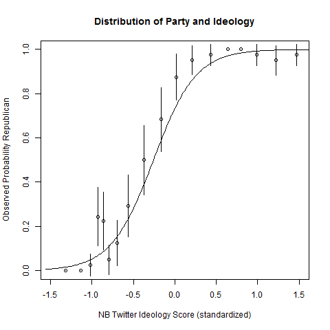
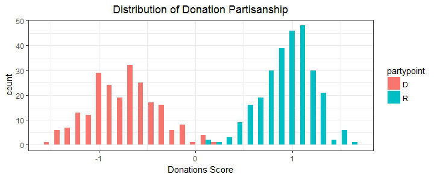

Party and ideology have become nearly intertwined. Here we see the likelihood a member of congress is a member of the republican party increase dramatically as the partisanship score moves from liberal on the left to conservative on the right.

Here we see partisanship according to whether a member of congress recieves money from conservative or liberal donors

Here we can see the aggregate amount of partisanship during 2012 when President Obama was re-elected. Each dot is the average partisanship among members of congress for that week.